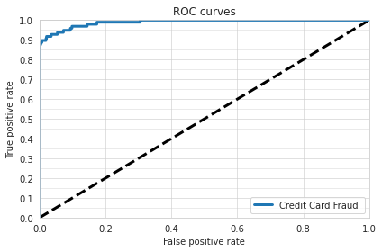

Fraud with GBMs
Welcome to this tutorial on training a GBM model for detecting credit card fraud using the creditcard_fraud Ludwig dataset!
Open this example in an interactive notebook:

Load data¶
First, let's download the dataset from Kaggle.
!ludwig datasets download creditcard_fraud
This command will download the credit card fraud dataset from Kaggle.
The creditcard_fraud dataset contains over 284K records with 31 features and a binary label indicating whether a transaction was fraudulent or not.
from ludwig.benchmarking.utils import load_from_module
from ludwig.datasets import creditcard_fraud
df = load_from_module(creditcard_fraud, {'name': 'Class', 'type': 'binary'})
This will load the dataset into a Pandas DataFrame and add a reproducible train/valid/test split, stratified on the output feature.
df.groupby('split').Class.value_counts()
| split | Class | count |
|---|---|---|
| 0 | 0 | 178180 |
| 1 | 349 | |
| 1 | 0 | 19802 |
| 1 | 34 | |
| 2 | 0 | 86333 |
| 1 | 109 |
Training¶
Next, let's create a Ludwig configuration to define our machine learning task. In this configuration, we will specify that we want to use a GBM model for training. We will also specify the input and output features and set some hyperparameters for the model. For more details about the available trainer parameters, see the user guide.
import yaml
config = yaml.safe_load(
"""
model_type: gbm
input_features:
- name: Time
type: number
- name: V1
type: number
- name: V2
type: number
- name: V3
type: number
- name: V4
type: number
- name: V5
type: number
- name: V6
type: number
- name: V7
type: number
- name: V8
type: number
- name: V9
type: number
- name: V10
type: number
- name: V11
type: number
- name: V12
type: number
- name: V13
type: number
- name: V14
type: number
- name: V15
type: number
- name: V16
type: number
- name: V17
type: number
- name: V18
type: number
- name: V19
type: number
- name: V20
type: number
- name: V21
type: number
- name: V22
type: number
- name: V23
type: number
- name: V24
type: number
- name: V25
type: number
- name: V26
type: number
- name: V27
type: number
- name: V28
type: number
- name: Amount
type: number
output_features:
- name: Class
type: binary
trainer:
num_boost_round: 300
lambda_l1: 0.00011379587942715957
lambda_l2: 8.286477350867434
bagging_fraction: 0.4868130193152093
feature_fraction: 0.462444410839139
evaluate_training_set: false
"""
)
Now that we have our data and configuration set up, we can train our GBM model using the following command:
import logging
from ludwig.api import LudwigModel
model = LudwigModel(config, logging_level=logging.INFO)
train_stats, preprocessed_data, output_directory = model.train(df)
Evaluation¶
Once the training is complete, we can evaluate the performance of our model using the model.evaluate command:
train, valid, test, metadata = preprocessed_data
evaluation_statistics, predictions, output_directory = model.evaluate(test, collect_overall_stats=True)
ROC AUC
evaluation_statistics['Class']["roc_auc"]
0.9429567456245422
Accuracy
evaluation_statistics['Class']["accuracy"]
0.9995435476303101
Precision, recall and F1
evaluation_statistics['Class']["overall_stats"]
{'token_accuracy': 0.9995435633656935,
'avg_precision_macro': 0.9689512098036177,
'avg_recall_macro': 0.8917086143188491,
'avg_f1_score_macro': 0.9268520044110913,
'avg_precision_micro': 0.9995435633656935,
'avg_recall_micro': 0.9995435633656935,
'avg_f1_score_micro': 0.9995435633656935,
'avg_precision_weighted': 0.9995435633656935,
'avg_recall_weighted': 0.9995435633656935,
'avg_f1_score_weighted': 0.9995230814612599,
'kappa_score': 0.8537058585299842}
Visualization¶
In addition to evaluating the performance of our model with metrics such as accuracy, precision, and recall, it can also be helpful to visualize the results of our model. Ludwig provides several options for visualizing the results of our model, including confusion matrices and ROC curves.
from ludwig import visualize
Confusion matrix
We can use the visualize.confusion_matrix function from Ludwig to create a confusion matrix, which shows the number of true positive, true negative, false positive, and false negative predictions made by our model. To do this, we can use the following code, which will display a confusion matrix plot showing the performance of our model.
visualize.confusion_matrix(
[evaluation_statistics],
model.training_set_metadata,
'Class',
top_n_classes=[2],
model_names=[''],
normalize=True
)


ROC curve
We can also create an ROC curve, which plots the true positive rate against the false positive rate at different classification thresholds. To do this, we can use the following code:
visualize.roc_curves(
[predictions['Class_probabilities']],
test.to_df()['Class_mZFLky'],
test.to_df(),
'Class_mZFLky',
'1',
model_names=["Credit Card Fraud"],
output_directory='visualization',
file_format='png'
)

We hope these visualizations have been helpful in understanding the performance of our GBM model for detecting credit card fraud. For more information on the various visualization options available in Ludwig, please refer to the documentation.
Thank you for following along with our tutorial on training a GBM model on the credit card fraud dataset. We hope that you found the tutorial helpful and gained a better understanding of how to use GBM models in your own machine learning projects.
If you have any questions or feedback, please feel free to reach out to our community!